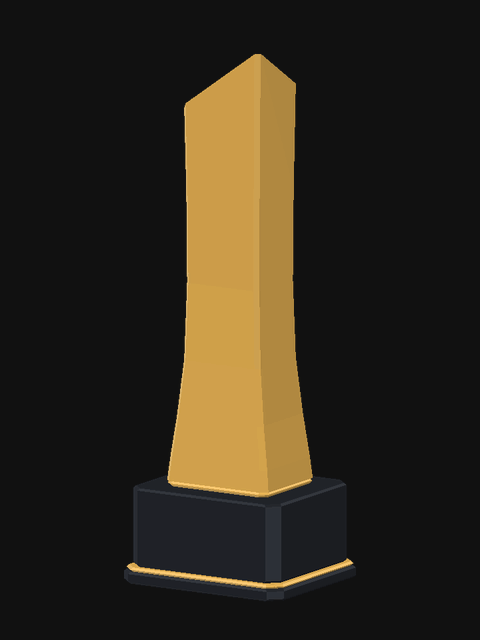
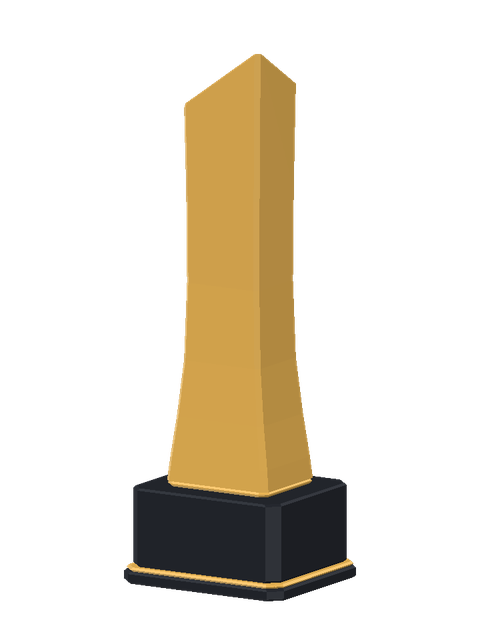

기본 트로피 · 3D 회전 시안
실제 입체 모델을 중심 수직축으로 360° 회전합니다. 한 바퀴 6초 · 120프레임.
현재 이미지를 참고한 첫 모델링 시안으로, 금속 질감과 세부 형태는 원본 PNG와 차이가 있습니다.
회전 GIF · 어두운 배경

GIF 저장회전 WebP · 투명 배경

WebP 저장3D 모델 OBJ · 재질 MTL
모델과 재질 파일은 같은 폴더에 보관해주세요. 실제 시상식에는 적용하지 않은 시안입니다.